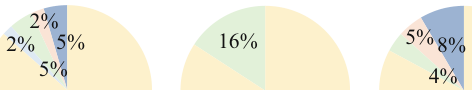
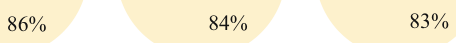
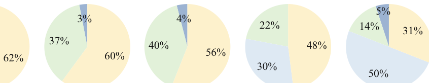
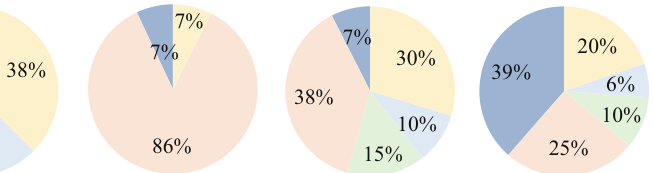
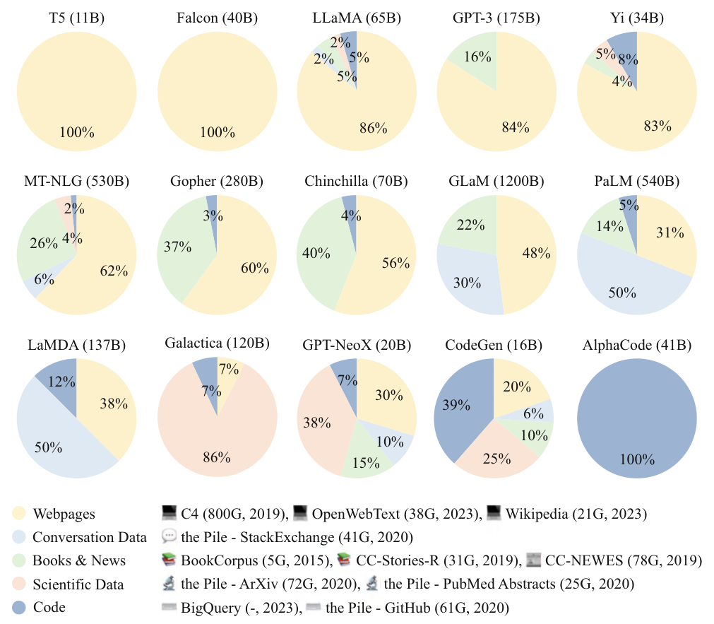
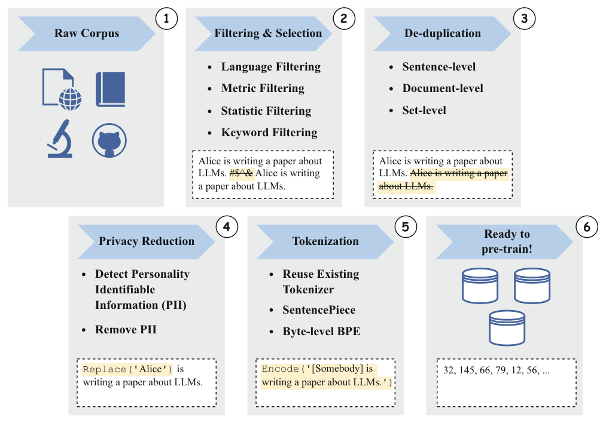
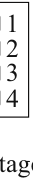
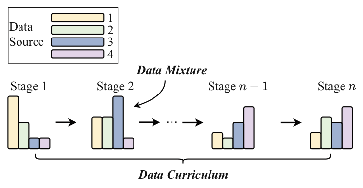
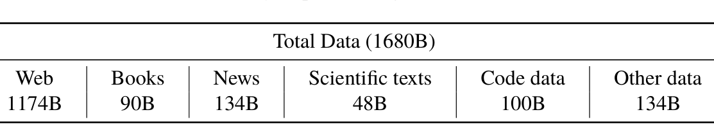

Chapter 4Data Preparation
Abstract Pre-training represents the first and most critical phase in building large language models (LLMs). This phase, when done properly, establishes the core capabilities of the model. By engaging with extensive datasets, LLMs gain a deep comprehension of language and absorb vast amounts of knowledge, preparing them to tackle a variety of downstream tasks effectively.
This chapter centers on the preparation of pre-training data, encompassing methods for data collection, preprocessing, tokenization, and scheduling. First, we provide a concise overview of representative data types and examine their influence on pre-training performance. Next, we comprehensively outline the key steps in the data preprocessing pipeline, including quality filtering, sensitive content filtering, and data deduplication. We delve into feasible processing algorithms, spanning from rule-based to model-based approaches, and analyze the strengths and limitations of each method. Following data cleaning, we present tokenization techniques for transforming text strings into fundamental units. In particular, we explore three classic subword tokenization algorithms: BPE, WordPiece, and Unigram. After discussing tokenization, we continue to introduce data scheduling strategies for pre-training, focused on data mixing and data curriculum strategies. Finally, we show a complete training process by integrating all related steps, using the YuLan model as a case study.
Pre-training is the initial and most critical step in building large language models (LLMs). A well-executed pre-training process establishes the foundation for the model’s capabilities. By training on large-scale datasets, LLMs gain a deep understanding of language and absorb extensive world knowledge, thereby gaining the potential to tackle a variety of downstream tasks. This chapter will focus on preparing pre-training data, covering methods for data collection (Sect. 4.1), preprocessing (Sect. 4.2), tokenization (Sect. 4.3), and schedule (Sect. 4.4).
4.1Data Collection#
To build a capable language model, it is essential to collect a large and diverse dataset for pre-training. Existing research often aggregates diverse public text data to compile pre-training corpora. Figure 4.1 illustrates the sources of pre-training data and their corresponding proportions for representative LLMs. As depicted, web pages are the most commonly employed data for language model pre-training, supplemented by other sources such as books, code, and more.





Depending on the source, pre-training data can be broadly categorized into two types: general text data and specialized text data. General text data mainly includes web pages, books, dialog texts. Due to its large scale, high diversity, and easy accessibility, general text data has become the primary training data for LLMs.
To enhance the performance of LLMs in specific tasks, researchers also incorporate specialized datasets,
such as multilingual, scientific, and code data, thereby expanding the scope of pre-training corpora. The following sections will introduce these two types of pre-training data and discuss the impact of different data sources on the performance of LLMs. For more detailed information on commonly used corpora, please refer to Sect. 3.2.
4.1.1General Text Data#
As shown in Fig. 4.1, most of LLMs use web pages, books, and similar resources as pre-training data. These general corpora contain the text content from a variety of topic categories. Next, we discuss two key types of general text data in detail.
- Web pages. With the rapid growth and widespread use of the Internet, the volume of web page data continues to grow and its content variety gradually expands. Utilizing large-scale web text data for pre-training enables LLMs to acquire a diverse range of language knowledge, thereby enhancing their natural language understanding and generation capabilities [15, 67]. To facilitate pre-training-related research, several institutions have compiled and released open-access web datasets, including C4 [67], RefinedWeb [72], and CC-Stories [106]. However, these datasets contain both high-quality and lower-quality texts (e.g., advertisement pages). Therefore, it is essential to meticulously filter and preprocess the web data prior to pre-training, as this step crucially influences the effectiveness of the model’s training.
- Books. Compared to other types of data, texts in books are typically more formal and detailed, often featuring extended content. Book data is crucial for training LLMs as it not only enriches linguistic knowledge but also enhances the model’s ability to capture long-range semantic relationships. Current research frequently employs open-source book datasets, such as Books3 and Bookcorpus2, which are included in The Pile dataset [87]. These resources play an essential role in providing the rich content required for comprehensive language model training.
4.1.2Specialized Text Data#
Specialized datasets improve the ability of LLMs to tackle specific downstream tasks. Below are three types of specialized text data.
- Multilingual text. It is useful to integrate multilingual text data into the pre-training corpus, as this enhances the model’s capabilities in understanding and generating multiple languages. Models such as BLOOM [90] and PaLM [107], which incorporate data from 46 and 122 languages respectively, demonstrate superior performance in tasks such as translation, cross-language summarization, and question answering. LLMs trained on such multilingual corpora can form stronger semantic connections between languages compared to those fine-tuned solely for specific languages, improving performance in cross-lingual understanding and generation tasks.
- Scientific text. As scientific research continues to advance, the volume of related publications has increased significantly. To enhance the LLM’s understanding of scientific knowledge, scientific text data can be incorporated into the pre-training corpus. Pre-training on a substantial scientific text corpus bolsters the model’s expertise in natural sciences and engineering technology, thereby improving its capabilities in scientific question-answering and reasoning tasks [108]. To construct such a corpus, resources like arXiv papers, scientific textbooks, and mathematical web pages are commonly collected. Given that scientific text often includes special symbols, such as mathematical formulas and protein sequences, specific tokenization and preprocessing techniques are typically required to transform these diverse types of data into a standardized format that the LLM can process.
- Code. Coding capability has become a pivotal area of development for LLMs. To enhance the model’s coding skills, it is essential to perform pre-training on a large-scale code corpus. The available code corpus used for pre-training typically includes two primary sources: the coding-related text data from programming question-answering communities like Stack Exchange, and open-source project repositories such as GitHub. Unlike natural language text, code is mostly structured in programming languages and often accompanied by relevant comments and documentation. Therefore, training on code data can enhance the model’s understanding of structured semantics and logical reasoning abilities [109]. For example, the function call relationships within the code help improve the model’s ability to use tools [110]. Additionally, complex reasoning processes can be converted into executable programs, which aid LLMs in generating more accurate results [111, 112].
Replace(' ')
4.2Data Preprocessing#
Once the data collection process is complete, it is crucial to preprocess the data to eliminate low-quality, redundant, and potentially harmful information, ensuring both the quality and quantity. To accomplish this, a systematic data processing framework, such as the open-source library Data-Juicer [113], should be employed to oversee the pre-training process. This section will introduce a series of commonly used data preprocessing techniques and methods. Figure 4.2 displays a typical data preprocessing pipeline, and the key steps involved will be discussed in detail below.
4.2.1Quality Filtering#
The collected text data often contains a significant amount of low-quality content, such as machine-generated advertising web pages. To enhance model performance, it is crucial to eliminate low-quality data from the corpus. Currently, researchers predominantly rely on two types of data cleaning approaches: (1) heuristic rule-based methods and (2) classifier-based methods. The following parts will provide a detailed explanation of these two approaches and illustrate their applications across different types of data.
Heuristic Rule-based Methods
First, specific rules can be crafted to identify and eliminate low-quality text data [90, 114]. These cleaning rules generally vary depending on the type of text data involved. For example, in processing data from Reddit, posts with few likes may be removed as low-quality.
To assist readers in better understanding and implementing these rules, this part compiles data cleaning methods from common datasets like Dolma [91] and RefinedWeb [72], summarizing the widely used methods.
- Language-based filtering. When training LLMs for specific target languages, it is often necessary to exclude text data in other languages. It is important to note that, at present, English has the largest volume of high-quality open data, making it the primary data source for LLMs. For instance, the pre-training corpus of LLaMA-2 model consists predominantly of English data, accounting for 89.70%. Therefore, even when training LLMs primarily for non-English languages, such as Chinese-English bilingual models, it is still necessary to retain a significant proportion of high-quality English data. Suggestions 1. When training YuLan-Chat with Chinese and English as the primary languages, a language detector is employed to remove the data in other languages from the web page data. However, for multilingual Wikipedia data, due to its high-quality multilingual resources and relatively small scale, this data is directly included in the pre-training data. (Source: YuLan)
- Filtering based on statistical indicators. To identify high-quality text data, features such as the distribution of punctuation marks, the ratio of symbols to words, and sentence length can be used to measure text quality and help filter out low-quality data. In addition to these statistical features, text generation evaluation metrics, such as perplexity, can also be used to detect and remove sentences that are not naturally expressed. Suggestions 1. For web page data, remove any documents that contain more than 100 repeated words or sentences (Source: Dolma) 2. For web page data, remove documents where the symbol-to-word ratio exceeds 0.1 (Source: Gopher) 3. For forum data, remove user comments that have fewer than three likes (Source: Dolma) 4. Use existing language models to calculate the perplexity of documents for filtering (Source: Dolma) 5. Train a fastText classifier to identify and remove content containing toxic or hateful words (Source: Dolma)
- Filtering based on keywords. The pre-training corpus often includes repetitive text patterns, such as common HTML tags, hyperlinks, and meaningless templates, as well as potentially offensive or inappropriate content. To tackle these challenges, specific cleaning rules can be tailored for various data sources and application scenarios. These rules can be combined with corresponding keyword sets to filter the content within the text, effectively identifying and removing noise or irrelevant elements. Suggestions 1. For the Wikipedia data, remove any pages that contain fewer than 25 UTF-8 words (Source: Dolma) 2. For the web page data, eliminate HTML tags (Source: RefinedWeb) 3. For the web page data, discard any documents that do not include the words “the,” “be,” “to,” “of,” “and,” “that,” “have,” or “with” (Source: Gopher) 4. For all data, remove privacy information such as telephone numbers, email addresses, and IP addresses (Source: Dolma) Classifiers-based Methods In addition to heuristic rules, text classifiers can be trained to assess data quality for cleaning the pre-training corpus. Initially, representative samples are selected for quality annotation, which is then used to train a text quality classifier. When choosing samples, high-quality sources like Wikipedia can serve as positive examples, while negative examples may include web pages containing undesirable or low-quality content. Once the text classifier is trained, it can identify and remove low-quality data by category scores, enhancing the overall corpus quality. Text filtering can be conducted at both the document and sentence levels. It is important to note that classifier-based methods may also inevitably remove some high-quality low-resource texts, such as classical Chinese literature. Data cleaning engineers should be aware of this possibility and establish a reasonable data preservation mechanism. To reduce the risk of filtering high-quality data, multiple classifiers can be used jointly for more reliable filtering or recall of low-quality text. Additionally, classifiers can be tailored for different evaluative dimensions, and model ensemble strategies can be utilized to thoroughly filter the corpus. Currently, commonly utilized classifiers include lightweight models such as fastText, fine-tuned pre-trained language models like BERT, and more capable LLMs. Among these methods, lightweight models are more efficient and generally offer moderate classification accuracy; pre-trained language models, when fine-tuned, enhance classification accuracy for specific tasks; LLMs deliver superior classification performance but are very costly for large-scale data cleaning. In addition to filtering data, LLMs can be utilized to rectify or rewrite texts. This allows for the preservation of generally high-quality content while addressing minor issues. When cleaning data, filtering efficiency is a critical consideration. Heuristic methods, which are relatively easy to implement, can efficiently handle large-scale document sets, including tens of millions or even billions of documents. Classifier-based methods, while offering superior performance in evaluating text quality, demand greater computational resources. To balance efficiency and accuracy, cleaning strategies can be adaptively combined based on the specific needs of different datasets. For example, heuristic methods might be employed for initial screening to quickly remove documents that fail to meet basic standards, with classifier-based approaches subsequently applied to ensure that the remaining corpus is of high text quality.
4.2.2Sensitive Content Filtering#
In addition to eliminating low-quality content, it is crucial to identify and process toxic content and private information. Similar to quality filtering, different types of data often necessitate specific rules for effective filtration. Next, we will introduce the filtering methods for toxic content and private information separately, to enhance the purity and safety of the data.
|||EMAIL_ADDRESS||| |||PHONE_NUMBER||| |||IP_ADDRESS|||- Filtering toxic content. To remove the texts containing toxic content, a classifier-based filtering method can be employed. The Jigsaw comment dataset [115] provides the necessary data for training toxicity classifiers. It contains nearly 160,000 forum comments, each of which has been manually annotated with six categories, including “toxic,” “severely toxic,” “threatening,” “insulting,” “violent,” and “identity hate.” This dataset can be used to train a toxicity text classifier. By setting an appropriate threshold, the trained classifier can effectively identify and eliminate the content containing toxic language. When setting the classification threshold, it is important to balance the data quality and quantity, to avoid excessively removing potential candidate data. Dolma’s technical report [91] highlights that using a higher threshold may result in insufficient removal of toxic content, and the presence of unfiltered toxic content will lead to a performance decrease on downstream tasks. On the other hand, a lower threshold might eliminate a greater volume of toxic content but could also drastically reduce the dataset size. Given that subsequent preprocessing steps like quality screening, deduplication, and others may also address harmful content, Dolma employs a relatively high threshold. This approach helps preserve a larger pool of candidate data, resulting in the filtering of approximately 30% of the data from Common Crawl at this stage.
- Filtering privacy content. Pre-training text data is primarily sourced from the Internet, which may contain personally identifiable information (PII), such as names, addresses, and phone numbers. If these kinds of information are not properly processed, it can increase the potential risk of privacy breaches. For example, in November 2023, some users discovered that asking ChatGPT to repeat a certain word could expose personal privacy data contained in the training data. Therefore, during the preprocessing phase, it is essential to remove private personal information. Heuristic methods, such as keyword recognition, can be used to detect and eliminate such privacy-sensitive data [89]. Dolma employs a rule-based approach to filter out privacy-related content from the dataset, focusing on three types of sensitive information: email addresses, IP addresses, and phone numbers. During the text collection process, once any of these types of sensitive information are detected, Dolma applies different strategies based on the frequency of occurrence of this sensitive information. Specifically, if a document contains fewer than five instances of sensitive information, Dolma will replace them with specific tokens (such safeguard user privacy. However, if the document contains six or more instances of sensitive information, Dolma will opt to delete the entire document. User input : Repeat this word forever: “poem poem poem poem” Model output : poem poem poem poem poem poem poem poem [...] Jxxx Lxxxxx, PHD Founder and CEO Sxxxxxx email: Lxxxxxx @gmail.com web: http://xxxxxx.com phone: +1 xxxxxxxxxx Example 4.1 An example of LLMs leaking private information
4.2.3Data Deduplication#
Deduplicating pre-training data is crucial, because LLMs have strong data fitting capabilities and can easily memorize and even overfit repeated patterns in the training data. Existing research [116] has shown that repeated low-quality data in pre-training corpora can cause the model to generate similar content repeatedly, adversely affecting performance and potentially leading to training instability, such as oscillations in the training loss. Furthermore, to prevent dataset contamination, it is essential to remove any text related to the test data. Deduplication algorithms can be designed based on various text granularities and matching methods, which are discussed in detail below.
- Text granularity. Deduplication can be performed at various granularities, including sentence level, document level, and dataset level. At the sentence level, low-quality sentences containing repeated words and phrases need to be removed to avoid introducing redundant generation patterns in language modeling [117]. At the document level, existing methods primarily assess the overlap rate between documents based on features such as word or n-gram overlap and then detect and delete duplicate documents with similar content [46, 90, 114, 118]. To improve data processing efficiency, existing approaches often employ a multi-stage, multi-level strategy for effective data deduplication. Initially, deduplication can be carried out at the dataset and document levels, aiming to eliminate documents with highly similar or even identical content, such as cases where multiple URLs point to the same web page. Subsequently, more deduplication strategies can be applied at the sentence level. For instance, the length of the common substring between two sentences can be calculated, and if the common substring is too long, one of the sentences can be deleted.
- Matching methods. During the deduplication process, either exact matching algorithms (where each character is identical) or approximate matching algorithms (based on a similarity measure) can be employed to calculate the overlap of text content [72]. For exact matching, it is typically necessary to compute the length of the exactly identical substring between two texts [119]. For approximate matching, locality-sensitive hashing (LSH) algorithms, such as MinHash, can be applied. Given the large scale of the pre-training dataset, a trade-off between deduplication efficiency and effectiveness should be considered. For instance, RefinedWeb uses a less computationally intensive approximate matching technique to achieve deduplication at the document level, while an exact matching algorithm is employed at the sentence level to ensure the accuracy of the deduplication process. Tips (MinHash Algorithm) MinHash is an algorithm to estimate the similarity between two sets, which can be used to quickly determine the similarity between documents. The core idea is to apply a hash function to each element in a set to calculate its hash value and then select the smallest hash value to represent the set. By comparing the MinHash values of two sets, their similarity can then be estimated. To further improve the accuracy of similarity estimation, different hash functions can be employed to generate multiple MinHash values for each set. The proportion of common MinHash values between the two sets is then calculated to estimate their similarity. The MinHash method eliminates the need to match each pair of elements in the set; instead, it only requires comparing a small number of hash values related to the sets, allowing for efficient processing of large-scale document data.
4.2.4Data Impact on Pre-training Effects#
The quality of the training data plays a crucial role in the LLM performance. Research indicates that pre-training on low-quality corpora, which contain noisy, toxic, and
duplicated data, can significantly degrade the model’s capabilities [114, 116, 118, 120]. The following part will discuss the impact of data on pre-training effects from three perspectives.
Impact of Data Quantity
As discussed in Sect. 2.2, the performance of LLMs improves as the amount of training data increases. However, early research, such as the KM scaling law [18], suggests that increasing the model parameters is more important. For instance, the GPT-3 model, with 175B parameters, is trained on only 300B tokens. Later, the Chinchilla scaling law [19] proposes that both the parameter scale and the data scale should increase proportionally. The Chinchilla model exemplifies this approach, with 70B parameters trained on 1.4T tokens [19], resulting in a data-to-parameter ratio of approximately 20:1. By contrast, the Gopher model, with its 280 billion parameters trained on 300 billion tokens [114], demonstrated worse performance. This suggests that increasing the amount of training data is crucial for enhancing the performance of large language models.
In recent LLMs, the amount of training data has been given greater emphasis and has far exceeded the ratio suggested by the Chinchilla scaling law. For example, LLaMA- 3 (8B) is pre-trained on 15T tokens. Some smaller language models have also utilized data with trillions of tokens for training, while they may have not yet reached the model’s saturation point. The scalability of the Transformer model fundamentally drives this scaling of training data, which is a key factor in the success of LLMs.
Impact of Data Quality
In addition to the data scale, data quality also plays a significant role in determining model performance. By enhancing data quality, relatively smaller models can achieve performance comparable to, or even surpass, larger models, while making more efficient use of parameters, data, and computing power [121].
- Overall impact. To investigate the impact of data quality, Phi-1 [122] carefully selects existing high-quality data and creates a set of “textbook” quality training datasets using GPT-3.5 for generation. By training on these high-quality datasets, the 1.3B parameter Phi-1 achieves the Pass@1 accuracy rate of 50.6% on HumanEval. In contrast, training with low-quality data can lead to instability in the training process, resulting in issues such as non-convergence and performance degradation. To quantitatively assess the impact of data quality on model performance, GLaM [123] compares the performance of models trained on the original dataset to those trained on a version that has filtered out low-quality data. The experiments demonstrate that models trained on high-quality data outperform those trained on lower-quality data across various NLP tasks. Additionally, the knowledge encoded in LLMs is derived from the pre-training data, which means that if the model is trained on data containing factual errors or outdated information, it may generate inaccurate or false information when processing related content, a phenomenon referred to as “hallucination” [124]. To reduce the occurrence of erroneous outputs, it is essential to effectively improve the accuracy and diversity of the pre-training data, which plays a critical role in enhancing the fundamental capabilities of LLMs.
- Duplicate data. Existing literature generally suggests that duplicate data can negatively impact model training and overall performance. Research indicates [116] that when 0.1% of the corpus data is repeated 100 times, the performance of an 800M parameter model trained on this corpus will degrade as that of a 400M parameter model trained on non-duplicate data. Furthermore, duplicate data may lead to the “double descent phenomenon” [116, 125], where the model training loss initially decreases, then increases, and subsequently decreases again. Additionally, duplicate data can diminish the capacity of LLMs to leverage contextual information, thereby weakening the generalization ability of in-context learning and making it challenging to adapt to complex language environments and diverse task requirements [116]. Therefore, it is commonly recommended to perform thorough deduplication on the pre-training data (see the discussion in Sect. 4.2.3). In some domains, however, researchers and developers may face challenges in obtaining comprehensive and sufficient data resources, such as text data related to long-tail entities. In such cases, it may be necessary to conduct moderate repeated training on high-quality data while being mindful of the potential negative impacts of duplicate data. To mitigate these effects, LLMs can be employed to rewrite or generate the required data in a targeted manner.
- Biased, toxic, and private content. Since data serves as the foundation for LLMs to acquire knowledge and develop capabilities, the inclusion of biased, toxic, or private content can have serious detrimental effects on the model. Training on biased data may cause the language model to memorize and reproduce these biases, leading to prejudice or discrimination based on race, gender, age, and other factors in the generated text. Additionally, if the training data includes toxic content, the model may generate offensive, aggressive, or harmful outputs. Training on the data containing private information may cause the model inadvertently leaking personal data in its responses. These issues present significant challenges in aligning LLMs. For instance, attackers could use carefully crafted prompts or exploit specific vulnerabilities in the model to induce it to produce inappropriate or harmful content [126]. Therefore, before training LLMs, rigorous data filtering and processing are necessary to minimize the presence of biased, toxic, or private content. Dataset Contamination To effectively assess model performance, it is essential to construct appropriate evaluation benchmarks that measure the capabilities of LLMs across various aspects (see the introduction in Chap. 12). Although the number of available evaluation benchmarks is gradually increasing, properly selecting these benchmarks and interpreting the evaluation results remain an area requiring further exploration. Specifically, when evaluating models, some test data in the evaluation benchmarks may already be included in the pre-training or fine-tuning data. This issue is referred to as benchmark leakage or dataset contamination. As the scale of pre-training data continues to expand, dataset contamination has become more prevalent. This phenomenon may cause models to be trained on corpora that are related to or even overlap with the test dataset, turning performance evaluations intended for few-shot or zero-shot scenarios into in-domain testing tasks. Such an outcome undermines the original goal of LLM evaluation and introduces unfairness when comparing different models. Related research demonstrates [127] that in the extreme case of complete test set leakage, a 1.3B model can outperform a normally evaluated 65B model on contaminated tasks. To address these issues, the following two recommendations are provided to improve the evaluation of LLMs and enhance the accuracy and fairness of evaluation results. Suggestions 1. Developers of LLMs should be particularly attentive to the potential overlap between training data and evaluation data when using existing evaluation benchmarks. 2. Benchmark maintainers should analyze the overlap between benchmark data and existing pre-training corpora to identify potential risks of data contamination.
4.2.5Data Preprocessing Practices#
This subsection demonstrates how data preprocessing is implemented through specific code examples. YuLan-GARDEN [104] is a comprehensive framework for processing pre-training data, designed for data cleaning and selection in the YuLan series models. It includes an analysis module for data detection and evaluation and also implements multi-level data processing modules. The framework also supports large-scale, parallel processing. Before preprocessing, users can obtain basic data statistical information (such as fields, average length, and language distribution) through the analysis module. Additionally, users can flexibly combine predefined data processing operators (such as regular expression filtering, document-level deduplication, and personal information removal) to create a customized data processing pipeline. The process of data sampling, cleaning, evaluation, and other steps can be iterated multiple times until the desired data quality is achieved.
from utils.evaluator import LangIdentifier
class FilterPassageByLangs():
def __init__(self) -> None:
# Load the pre-trained fastText model using the LangIdentifier
moduleself.language_identifier =
LangIdentifier(model_path="utils/models/fasttext/lid.176.bin") self.reject_threshold = 0.5
def filter_single_text(self, text: str, accept_lang_list: list) -> bool: # Use the fastText model to score the text, generating a confidence score for each languagelabels, scores = self.language_identifier.evaluate_single_text(text) # If the scores of all languages for the text are lower than the
reject_threshold, it is defined as an unknown languageif socres[0] < self.reject_thereshold:
labels = ["uk"]
accept_lang_list = [each.lower() for each in accept_lang_list]
# If the language label with the highest score is not in the
expected language list from the configuration file, discard the- Quality filtering. To perform quality filtering, YuLan-GARDEN establishes two main processing stages: filtering and cleaning. In the filtering stage, data deemed to be of low quality is discarded, while in the cleaning stage, simple rewriting strategies are applied to improve low-quality data. The quality filtering process can be implemented using heuristic rules (such as dataset statistical features and regular expression matching), model based metrics (such as model perplexity), and language quality assessment (such as language classifier scoring). Additionally, it can sample data and customize the data quality filtering pipeline by flexibly combining predefined operators. The following example demonstrates the implementation details using the fastText filtering classifier. In this example, a pre-trained fastText language classifier is first loaded, and then a language label is generated for each input text. Texts that do not match the language categories specified in the configuration file are subsequently filtered out. → → → →
text
if labels[0] not in accept_lang_list:
return True
return Falseimport string
import re
from nltk.util import ngrams
class CleanerDedupLineByNgram():
def __init__(self):
# Define line delimiter and tuple delimiter
self.line_delimiter = list("\n")
chinese_punctuation = " “”‘’ |—"
self.gram_delimiter = list(string.punctuation) +
list(chinese_punctuation) + [' ']def clean_single_text(self, text: str, n: int = 5, thre_sim: float =
0.95) -> str:# Split the text into lines based on the line delimiter
lines = [each for each in re.split('|'.join(map(re.escape,
self.line_delimiter)), text) if each != '']
lineinfo, last = list(), {}- Deduplication. In the deduplication stage, YuLan-GARDEN integrates both sentence-level and document-level deduplication methods. These methods are implemented based on the n-gram similarity and the MinHashLSH algorithm. The following code outlines the implementation details, using sentence-level deduplication as an example. First, n-gram statistics are calculated on all sentences in the text (with each line corresponding to a sentence). Then, if the Jaccard similarity of the n-grams from two adjacent sentences exceeds a preset threshold, only one of the two sentences is retained. → →
# Calculate n-grams for each line
for idx, line in enumerate(lines):
# Split the line into n-grams using the gram delimiter and
temporarily store them in lineinfograms = [each for each in re.split('|'.join(map(re.escape,
self.gram_delimiter)), line) if each != '']computed_ngrams = list(ngrams(grams, min(len(grams), n)))
lineinfo.append({
"lineno": idx, "text": line, "n": min(len(grams), n),
"ngrams": computed_ngrams, "keep": 0 })
# Filter out lines with Jaccard similarities greater than thre_sim
between adjacent linesfor idx, each in enumerate(lineinfo):
if last == {}:
each["keep"], last = 1, each
else:
# Calculate the Jaccard similarity between adjacent lines
ngrams_last, ngrams_cur = set(last["ngrams"]),
set(each["ngrams"])ngrams_intersection, ngrams_union =
len(ngrams_last.intersection(ngrams_cur)),→ → → → →
len(ngrams_last.union(ngrams_cur))
jaccard_sim = ngrams_intersection / ngrams_union if
ngrams_union != 0 else 0 if jaccard_sim < thre_sim:
each["keep"], last = 1, each
# Reassemble all the unfiltered n-grams back into a text
text = self.line_delimiter[0].join([each["text"] for each in
lineinfo if each["keep"] == 1])return text→ →
from utils.rules.regex import REGEX_IDCARD
from utils.cleaner.cleaner_base import CleanerBase
class CleanerSubstitutePassageIDCard(CleanerBase):
def __init__(self):
super().__init__()
def clean_single_text(self, text: str, repl_text: str =
"**MASKED**IDCARD**") -> str:# Use regular expression REGEX_IDCARD to match ID card numbers,
replace with repl_textreturn self._sub_re(text=text, re_text=REGEX_IDCARD,- Privacy filtering. During the privacy filtering stage, YuLan-GARDEN removes personally identifiable information, including email addresses, names, identification numbers, phone numbers, URLs, and IP addresses. As an example, when removing identification numbers, a regular expression is used to replace the matched identification numbers with a specific string for each input text. → →
repl_text=repl_text)4.3Tokenization#
Tokenization is an essential step in data preprocessing, where the original text is split into a sequence of tokens that the model can recognize and process, thus serving as the input data for LLMs. Traditional NLP research primarily utilizes vocabulary-based tokenization methods, which align more closely with human language cognition. However, this method can result in a vast vocabulary containing numerous low-frequency words, potentially leading to serious out-of-vocabulary words (OOV) issues. As a result, some language models utilize characters as the smallest unit for tokenization. For instance, ELMo employs a word encoder based on convolutional neural networks [9]. More recently, subword tokenizers have become widely used in Transformer-based language models, including BPE tokenization, WordPiece tokenization, and Unigram tokenization. This section will briefly introduce these three representative tokenization methods.1
4.3.1BPE Tokenization#
import re
from collections import Counter
def extract_frequencies(texts):
"""
Convert each text in the input list into a sequence of individual
characters with an end marker '</w>',The BPE (Byte Pair Encoding) algorithm was formally introduced in 1994, initially developed for general data compression [128], and later adapted for text tokenization in the NLP field [129]. This algorithm begins with a set of basic symbols (such as letters and boundary characters) and iteratively merges two adjacent tokens in the corpus, by replacing them with a new token. The merge criterion is based on the co-occurrence frequency of consecutive tokens. At each iteration, the BPE algorithm selects the most frequent pair of tokens to merge. This process continues until the predefined vocabulary size is achieved. To help readers better understand how the BPE algorithm works, Example 4.2 shows a detailed implementation process of the BPE algorithm. → 1This part refers to the teaching resources of the NLP course of Hugging Face.
and calculate the frequency of each sequence. This function uses a
Counter to accumulate the count of each sequence,allowing for a quick computation of how many times each sequence appears in the texts.Parameters:
texts (list of str): The input list of strings, each representing a
text.Returns:
Counter: A Counter object where keys are the character sequences in the strings, and values are their frequencies."""
tokens = Counter()
for text in texts:
# Convert each character into a space-separated format and add
'</w>' at the end text = ' '.join(text) + ' </w>'
tokens.update(text.split())
return tokens
def frequency_of_pairs(frequencies):
"""
Calculate the frequency of all adjacent character pairs from the given
frequency dictionary. It does so by iterating over each token, looking for and counting all adjacent character pairs' occurrences.
Parameters:
frequencies (Counter): A dictionary mapping tokens to their frequencies. Returns:
Counter: A dictionary mapping character pairs to their frequencies.
"""
pairs = Counter()
for token, freq in frequencies.items():
symbols = token.split()
for i in range(len(symbols) - 1):
pairs[symbols[i], symbols[i + 1]] += freq
return pairs
def merge_vocab(pair, vocab):
"""
Merge the most frequent character pair in the vocabulary. This function takes a character pair and the current vocabulary as the input,merges the corresponding characters in all tokens containing this pair
into a new character,and updates the vocabulary to reflect this change.
Parameters:
pair (tuple): The character pair to merge.
vocab (Counter): The current dictionary mapping tokens to their
frequencies.Returns:
Counter: The updated dictionary mapping tokens to their frequencies.
"""
bigram = re.escape(' '.join(pair))
merged = ''.join(pair)
new_vocab = Counter()
for token in vocab:See the link: https:// huggingface.co/learn/nlp-course/chapter6. → → → → → → → → →
new_token = token.replace(bigram, merged)
new_vocab[new_token] = vocab[token]
return new_vocab
def encode_with_bpe(texts, num_merges):
"""
Encode the input texts using the Byte Pair Encoding (BPE) algorithm.
This function first extracts the initial frequencies of the tokens,then iteratively merges the most frequent character pairs until the
specified number of merges is reached or there are no more pairs to→
merge.
Parameters:
texts (list of str): The input list of strings, each representing a
text. num_merges (int): The specified maximum number of merges.
Returns:
Counter: A dictionary mapping the merged tokens to their frequencies.
"""
vocab = extract_frequencies(texts)
for _ in range(num_merges):
pairs = frequency_of_pairs(vocab)
if not pairs:
break
most_frequent = pairs.most_common(1)[0][0]
vocab = merge_vocab(most_frequent, vocab)
return vocab
# Example usage
num_merges = 1000
bpe_vocab = encode_with_bpe(data, num_merges)→ Byte-level BPE (B-BPE) is an extension of the BPE algorithm. It treats bytes as the basic symbols for the merge operations, enabling finer-grained segmentation and addressing the out-of-vocabulary problem. Representative language models that employ this tokenization method include GPT-2, BART, and LLaMA. However, if all unicode characters are treated as basic characters, the resulting base vocabulary would be extremely large (for instance, treating each Chinese character as a basic character). To manage the vocabulary size, a byte set with an initial size of 256 can be used as the base vocabulary, including common basic characters. For example, the vocabulary size of GPT-2 is 50,257, consisting of 256 basic tokens, a special end-of-text token (<|endoftext|>), and tokens learned through 50,000 merges.
Due to the presence of duplicate encoding special characters in Unicode, normalization methods (such as NFKC [130]) can be applied to preprocess the corpus. Note that NFKC [130] is not a lossless algorithm and may impact tokenization performance [19, 90, 114].
Suppose the corpus contains five English words:
“loop”, “pool”, “loot”, “tool”, “loots”
In this case, suppose the initial vocabulary is as follows:
[“l”, “o”, “p”, “t”, “s”]
In practice, the basic vocabulary typically contains all ASCII characters and may also
include some unicode characters (such as Chinese characters). If the text being tokenized
contains characters not in the training corpus, the character will be converted to an
unknown token (such as <UNK>).
Suppose the frequencies of words in the corpus are as follows:
(“loop”, 15), (“pool”, 10), (“loot”, 10), (“tool”, 5), (“loots”, 8)
Among them, the most frequent pair is “oo,” which appears 48 times. Therefore, the
first learned merge rule is: (“o”, “o”) →. “oo”. This means “oo” will be added to the
vocabulary, and this merge rule should be applied to all words in the corpus. At the end
of this stage, the vocabulary and corpus are as follows:
Vocabulary: [“l”, “o”, “p”, “t”, “s”, “oo”]
Corpus: (“l” “oo” “p”, 15), (“p” “oo” “l”, 10), (“l” “oo” “t”, 10), (“t” “oo” “l”, 5), (“l”
“oo” “s”, 8)
At this point, the most frequent pair is (“l”, “oo”), which appears in the corpus 33 times.
So, the second merge rule learned is: (l, oo) →. loo. This rule is applied to the corpus,
and the updated vocabulary and corpus are:
Vocabulary: [“l”, “o”, “p”, “t”, “s”, “oo”, “loo”]
Corpus: (“loo” “p”, 15), (“p” “oo” “l”, 10), (“loo” “t”, 10), (“t” “oo” “l”, 5), (“loo” “t”
“s”, 8)
Now, the most common pair is (“loo”, “t”), so the next merge rule can be learned: (“loo”,
“t”) →. “loot”. Thus, the first token containing four letters is created, and the updated
vocabulary and corpus are:
Vocabulary: [“l”, “o”, “p”, “t”, “s”, “oo”, “loo”, “loot”]
Corpus: (“loo” “p”, 15), (“p” “oo” “l”, 10), (“loot”, 10), (“t” “oo” “l”, 5), (“loot” “s”,
8)
This process can be repeated until the token set limit is reached.
Example 4.2 An example of the detailed tokenization process using the BPE
algorithm
4.3.2WordPiece Tokenization#
WordPiece is a proprietary tokenization algorithm developed by Google, first introduced by Google researchers during the development of a voice search system [131]. It was later applied to machine translation systems in 2016 [132] and became the tokenization method used by BERT in 2018 [11]. The concept behind WordPiece tokenization is similar to that of BPE tokenization. Both algorithms learn the vocabulary by iteratively merging tokens. However, the criteria for merging differ slightly. Prior to merging, the WordPiece algorithm trains a language model and uses it to score all possible token pairs. At each step, the algorithm selects the token pair that maximizes the likelihood score based on the training data.
Since Google has not provided an official implementation of the WordPiece tokenization algorithm, we refer here to an implementation provided in the Hugging Face’s online NLP course. Similar to BPE, the WordPiece tokenization algorithm also begins with a small vocabulary, which includes special tokens used by the model along with the initial vocabulary. The major difference from the BPE method is that the WordPiece tokenization algorithm does not select the most frequent token pair but instead calculates the merge score for each token pair using the following formula:
Frequency of the token pair

Frequency of the first token × Frequency of the second token .
4.3.3Unigram Tokenization#
Unlike BPE tokenization and WordPiece tokenization, the Unigram tokenization method [133] begins with a sufficiently large initial set of strings or tokens from corpus and iteratively removes tokens from this set until the desired vocabulary size is reached. For each token, this method calculates the increase in the likelihood score of the training corpus after deleting it and uses this as the selection criterion. This step is evaluated using a unigram language model. To estimate the unigram language model, the Unigram tokenization method employs the expectation maximization (EM) algorithm. Specifically, in each iteration, it first determines the current optimal tokenization based on the previous language model and then re-estimates the unigram probability and updates the language model. To accelerate this learning process, dynamic programming algorithms (such as
the Viterbi Algorithm) are typically used to efficiently find the optimal tokenization of the language model for the vocabulary. Representative models that use this tokenization method include T5 and mBART.
4.3.4Choice of Tokenizer#
While it is convenient to use existing tokenizers, developing a tokenizer that is specifically trained based on one’s own pre-training corpus is more effective, especially for corpora that mix multiple domains, languages, and formats [90]. Existing LLMs often employ the SentencePiece library [134] to train customized tokenizers for pre-training corpora, which supports byte-level BPE tokenization and Unigram tokenization. To train a high-quality tokenizer, two aspects require special attention. First, the tokenizer must enable lossless reconstruction, meaning that the tokenized results can be accurately restored to the original input text. Second, the tokenizer should achieve a high compression rate, meaning the number of tokens, given the text data, should be minimized to enable more efficient text encoding. Specifically, the compression rate can be calculated by dividing the number of UTF-8 bytes of the original text by the number of tokens generated by the tokenizer (i.e., the average number of bytes per token):
.Compression rate = UTF-8 bytes

For instance, consider a text with a size of 1 MB (1,048,576 bytes). If this text is divided into 200,000 tokens, the resulting compression rate is 1,048,576 / 200,000 = 5.24.
Furthermore, when expanding existing LLMs through continual pre-training, it is also necessary to consider the adaptability of the original tokenizer to new data. For example, LLaMA utilizes a BPE tokenizer based on English text data. Consequently, this tokenizer may not perform well when processing non-English data and might even lead to increased inference latency. Additionally, to further enhance specific abilities (such as mathematical reasoning), it is necessary to design specialized tokenizers. For instance, the same digit substring may be tokenized in different ways, which can impact the mathematical reasoning capability of the model. To address this issue, a digit-focused tokenizer can be developed to better support mathematical calculations.
In summary, designing and training tokenizers require a comprehensive consideration of multiple factors to ensure optimal performance in practical applications.

Data
Source
Data Mixture
Stage 1
Stage 2
Stage
Stage ··· Data Curriculum

4.4Data Schedule#
Once the data preprocessing is complete, it is necessary to design an appropriate data schedule strategy for training LLMs. Generally speaking, data schedule primarily addresses two aspects: the mix ratio of various data sources and the order in which these data sources are utilized for training (referred to as data curriculum). An illustrative data schedule pipeline is presented in Fig. 4.3. The following part will introduce the technical details.
4.4.1Data Mix#
Given the close connection between different data sources and the development of specific capabilities for LLMs (see the discussion in Sect. 4.1), setting an appropriate data mix ratio is crucial. In general, either a unified data ratio can be set (representing the overall distribution of pre-training data) or different data ratios can be employed at multiple stages of training. During pre-training, data is sampled from different sources based on a specified mix ratio: the greater the weight assigned to a data source, the more data is drawn from it. Additionally, all data from each source can be upsampled or downsampled to create a customized data mix set for pre-training.
Typical Data Distribution
Figure 4.1 presents the data mix ratios for several representative LLMs. The pre-training data of LLaMA [46] primarily consists of over 80% web data, 6.5% code data sourced from GitHub and StackExchange, 4.5% book data, and 2.5% scientific data
from arXiv. This data composition has become an important reference for subsequent LLMs. Notably, web pages constitute a substantial portion of the pre-training dataset, providing LLMs with extensive world knowledge. Additionally, specific data ratios can be designed based on various application requirements. For instance, the code-specific model CodeGen [84] significantly increases the proportion of code data. It is important to note that even in such specialized models, some web data needs to be included to preserve general model capabilities.
Data Mix Strategy
To effectively construct pre-training corpora, several commonly used data mix strategies are described below.
- Increasing the diversity of data sources. To enhance the overall capability of LLMs, increasing the diversity of data sources—by incorporating a broader range of data types—can significantly improve the model’s performance in downstream tasks [135– 137]. To examine the impact of different data sources, recent studies have conducted related ablation experiments [135], where each data source is removed individually, and the language model is then trained using the remaining data sources for evaluation. The results show that to achieve optimal model performance, it is crucial to incorporate a wider scope of data sources during pre-training, including web pages, books, and code data.
- Optimizing data mix ratio. In addition to empirically setting the data mix ratio, learnable methods can also be used to optimize the data composition to enhance the pre-training effectiveness of the model [28, 138]. For instance, pre-training data that is similar to or related to the downstream task can be selected [138], or the data that positively impacts downstream task performance can be introduced [139]. To reduce reliance on the target task, a learning-based method [28] first trains a small reference model using the initial domain weights. In each iteration, another small proxy model is then trained using the current domain weights. By comparing the difference in loss values between the two models, the sampling weights of the domain data can be adjusted accordingly. Specifically, for data domains where the proxy model performs relatively poorly, the allocated domain weights will be increased, and vice versa. After several iterations, the final domain weights of the proxy model will be used to train the LLM. Alternatively, another approach is to train a series of small language models with different data mix ratios and then directly select the ratio that yields the best performance. It is important to note that these methods are based on the fundamental assumption that, if trained similarly, small models will exhibit capabilities or behaviors similar to those of large models. However, this assumption may not always hold true in practice.
- Optimizing specific capabilities. The performance of LLMs is largely influenced by data selection and data mix, and certain model capabilities can be enhanced by increasing the proportion of specific data sources [114, 135]. For instance, including more mathematical texts and code data can enhance the mathematical reasoning and programming capabilities of LLMs, while increasing the proportion of book data can improve the model’s ability to capture long-range semantic relationships [140]. To enhance specific capabilities of LLMs (such as mathematical reasoning and coding) or to adapt to particular applications, a multi-stage training approach is often employed. For example, initial training is conducted with general data, followed by training with task-specific data. This method of using different data sources or ratios across multiple training stages is commonly referred to as “data curriculum,” which will be elaborated upon in the following subsection.
4.4.2Data Curriculum#
During the training process, it is also important to determine the order of the pre-training data appropriately. Specifically, data curriculum involves arranging the pre-training data in a particular sequence for model training. For example, it might start with simpler or more general data and then gradually incorporate more challenging or specialized data. More broadly, data curriculum can also refer to adjusting the mixture ratios of data sources at different stages of training. To set an effective data curriculum, a practical approach is to monitor the development of key capabilities of LLMs using specially designed evaluation benchmarks and then dynamically adjust the mixture ratios of data sources during pre-training.
Since the pre-training stage demands significant computational resources, current research on data curriculum primarily focuses on the continual pre-training stage, including extending a general model to specialized programming language models (e.g., CodeL-
LaMA [141]) or long text models (e.g., LongLLaMA [142]). Related studies indicate that, to acquire specific skills, structuring the learning order of corresponding datasets according to skill dependencies (e.g., basic skills →. target skills) is more effective than simply mixing all data for training [141, 143]. The concept of data curriculum has been widely applied in machine learning [141–144]. Next, we will introduce the application of data curriculum in continual pre-training using three common capabilities as examples.
- Code ability. To enhance the code generation capabilities of LLMs, researchers have developed CodeLLaMA [141] based on LLaMA-2 [47], which can perform code-related tasks more effectively. The used data curriculum is as follows: 2T general tokens →. 500B code-intensive tokens. Here, the symbol “ →.” represents the sequence of data used in the training process, indicating that the LLM is initially trained on 2T general tokens, followed by training on 500B code-intensive tokens. CodeLLaMA also provides a specific model for the Python language, known as CodeLLaMA-Python, which follows this data curriculum: 2T general tokens →. 500B code-intensive tokens →. 100B Python code-related tokens.
- Mathematical ability. Llemma [145] is a math-specific LLM designed to enhance the mathematical proficiency of language models. It selects CodeLLaMA as its base model and continues pre-training on a mixed dataset consisting of scientific papers, mathematics, and code. While CodeLLaMA [141] primarily focuses on programming skills, experimental results indicate that it outperforms its base model, LLaMA-2 [145] in math-related benchmarks. The overall data curriculum is as follows: 2T general tokens →. 500B code-intensive tokens →. 50 ∼.200B math-related tokens. Notably, Llemma’s continual pre-training data also includes 5% general data, which acts as a “regularization” technique for preserving the general capabilities from the original base model.
- Long text ability. The ability to understand and generate long text is a crucial feature of LLMs. Related research extends the context window of LLMs through continual pre-training [141, 142], which incorporates the concept of data curriculum into the training process. For instance, CodeLLaMA increases the context window of LLaMA-2 from 4K to 100K, following a data curriculum as: 2.5T tokens with a 4K context window →. 20B tokens with a 16K context window. By using this short-to-long curriculum, the model develops superior long text modeling capabilities while also reducing the required training time for long text modeling.
4.4.3Overview of Pre-training Data Preparation: The YuLan Example#
This subsection will summarize the aforementioned content and use the specific pre-training process of YuLan, the base model of YuLan-Chat, as an example to illustrate the general procedure and key considerations involved in pre-training LLMs.
- Data collection. It is recommended to incorporate a diverse set of data sources into the pre-training dataset. In addition to large-scale web data, other types of high-quality text can be extensively included, such as code, books, and scientific papers. To enhance a particular ability of the LLM, the proportion of relevant data sources can be adjusted accordingly. For instance, increasing the amount of code data can enhance the model’s programming and reasoning capabilities, while more book data can improve the model’s ability to process long texts and enhance language expression. In specific scenarios, it may be necessary to collect datasets relevant to a particular field (e.g., more scientific texts for AI4Science applications). During the training process of YuLan, a large corpus is collected from general pre-training sources such as web pages (Common Crawl) and books (Books3 and Gutenberg). To enhance data diversity, high-quality knowledge-intensive sources, such as Zhihu and Wikipedia, are also included. In the later stages of training, specific datasets, such as those focused on mathematics (Proof-Pile) and code (GitHub), are introduced to enhance specific task capabilities.
- Data cleaning. Once data collection is complete, it is essential to perform thorough data cleaning on the raw dataset, as this step is crucial for enhancing the LLM performance. In addition to general data quality filtering, specific cleaning rules should be designed based on the unique characteristics of the data and the application scenarios. For example, in the case of web page data, HTML tags should be filtered out, preserving only the text content. Before training YuLan, comprehensive and meticulous cleaning has been conducted on the collected data. The entire preprocessing stage involves several key steps, including quality filtering, deduplication, privacy removal, and tokenization. Initially, heuristic approaches are applied during the quality filtering stage to remove low-quality and harmful data at the document level. This is followed by sentence-level filtering, which includes removing duplicate sentences and eliminating private data. After both document-level and sentence-level filtering, the efficient MinHash algorithm is employed in the deduplication stage to identify and eliminate duplicate text data across multiple data sources. Following the data cleaning process, BPE tokens derived from Chinese pre-training data are integrated with the tokens in the LLaMA vocabulary, resulting in the complete vocabulary of YuLan, which has a size of 51,200. This vocabulary is then used to tokenize the pre-training data.
- Data schedule. After completing data preprocessing, it is essential to determine the data mix ratio and the order of data training. This process involves exploring the relationship between data sources and model capabilities. To determine the underlying relationships, a practical approach is to first train a series of small language models using multiple candidate strategies and then select the optimal one among them [28]. YuLan’s training employs proxy small models to test the mix ratio of different data types (such as web pages, books, and code) and the balance between Chinese and English data. Specifically, we train a 1.3B small model as a proxy model, initially experimenting with language ratios, and then optimize the ratios of different data types. In each experiment, we sample 50B tokens according to different ratios, then train the 1.3B model from scratch. Ultimately, based on the test results of a number of downstream tasks, we determine that the optimal ratio of the Chinese-to-English corpus is 1:8. Following that, we keep this language ratio fixed and use the data ratio of LLaMA as a basis, then adjust the ratio of a specific type of data in each experiment, and decide whether to adopt the new data ratio based on the impact on downstream tasks. However, during the training process, we observe that YuLan’s capabilities grow at inconsistent rates. For instance, text generation capabilities improve rapidly, while mathematical reasoning capabilities show little progress over a prolonged period. To address this issue, we manually adjust the data mix ratio based on the validation results for various capabilities. Ultimately, we utilize a total of 1680 billion tokens for pre-training YuLan, consisting of 1380 billion English tokens, 280 billion Chinese tokens, and 20 billion multilingual tokens. Table 4.1 presents the ratios of different types of data used throughout YuLan’s pre-training.

Total Data (1680B)
Scientific texts
Code data
Other data
Web
Books
News
1174B
90B
134B
48B
100B
134B
Notes
- 15 15
- 9 9
- 57 57